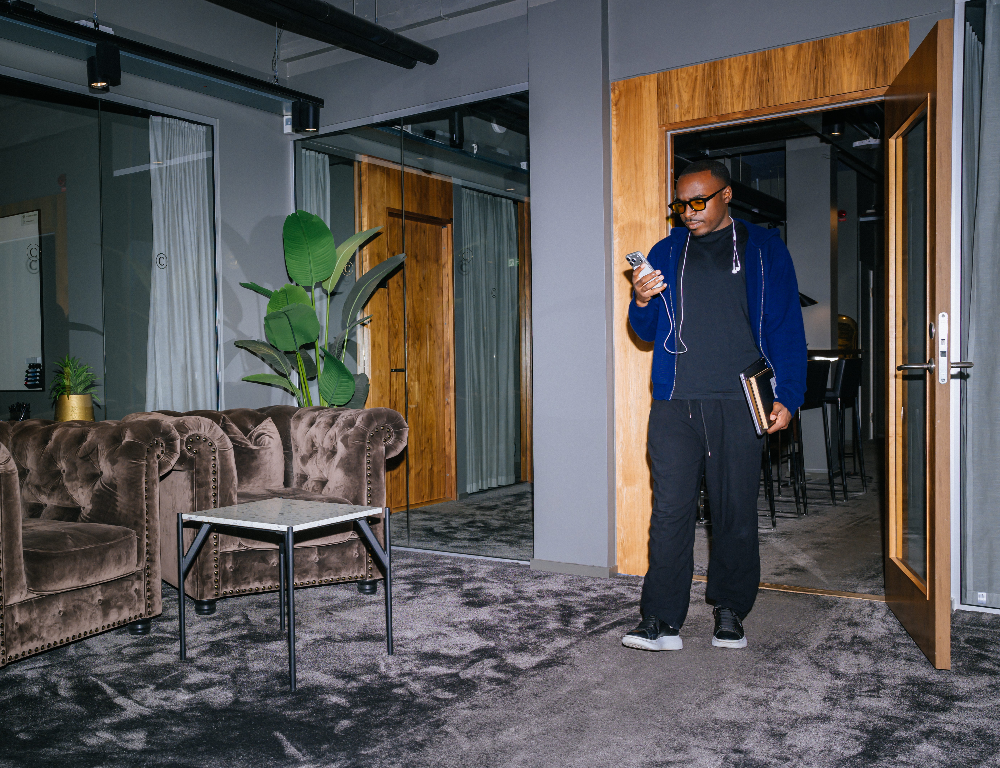
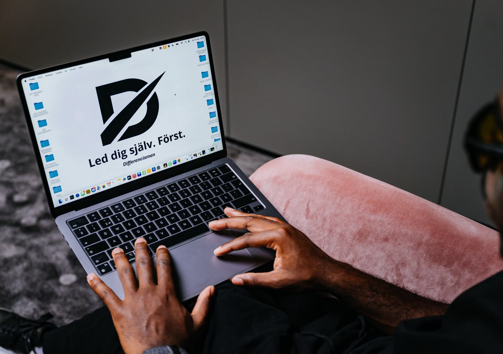

Klubb.
Människan är grunden.
Personlig vägledning i självledarskap med Rickson Mansiamina. För en eller flera personer i er klubb.
Jag vägleder människor i att möta krav, fatta egna beslut och ta ansvar för sitt agerande. Vi utgår från styrkorna, det som behöver utvecklas och det som ska befästas.

Förändra. Befästa. Bygga vidare.
När tankarna tar fokus från uppgiften.
Självtvivel, övertänkande och frustration kan påverka både beslut och handlingar. Vi undersöker vad som händer och vad som behövs för att återvända till uppgiften.
När sammanhanget förändras.
En ny roll, förändrad speltid, skada eller en ny miljö kan väcka frågor om både fotbollen och en själv. Vi tydliggör vad som går att påverka och vad som behöver få fokus.
När det går bra.
Genombrott, förtroende och större ansvar ställer också krav. Vi undersöker vad som fungerar, vad som ska befästas och vad nästa steg kräver.
Ett tydligt samarbete runt individen.
Vägledningen kompletterar klubbens arbete och ger individen ett eget utrymme för samtal. Upplägget anpassas till personens situation.
Vi kommer överens om min roll, klubbens kontaktperson och hur samarbetet följs upp. Tillsammans med individen tydliggör vi vad som stannar i vägledningen och vad som får återkopplas, till vem och varför.
Arbetet följer med ut i vardagen.
Jag lär känna människan och sammanhanget. I samtalen finns utrymme att tänka högt, pröva perspektiv och undersöka de egna valen.
Vi tydliggör vad som är viktigast nu. Det kan vara ett nytt perspektiv, ett beslut eller något konkret att pröva i vardagen. Ibland är nästa steg att fortsätta med det som redan fungerar.
Ett eget digitalt Träningsfält.
Varje person får en egen digital arbetsyta. Här samlas aktuellt fokus, sammanfattningar från våra samtal och personliga frågor och verktyg.
Träningsfältet ger stöd för att förbereda sig inför situationer, reflektera över sitt agerande och skriva ner det som blir tydligt. Innehållet utvecklas med arbetet. Tidigare lärdomar finns kvar att återvända till och bygga vidare på.
I återkommande samtal följer vi upp vad som har prövats och vad det ledde till. Vad fungerade? Vad behöver justeras? Vad ska vi fortsätta med?
Vi håller också kontakt mellan samtalen inom det upplägg vi kommer överens om.
Vägledningen bygger på Differencismen. Arbetet ska stärka människans förmåga att fatta egna beslut och leda sig själv över tid.

Så börjar vi.
Vi börjar med ett samtal om klubbens behov och vem vägledningen kan vara relevant för.
Därefter träffar jag personen. Vi går igenom den egna situationen och vad personen vill få ut av vägledningen. Tillsammans avgör vi om vi ska arbeta vidare. Inför start förankrar vi upplägget med klubben.
LED DIG SJÄLV. FÖRST.